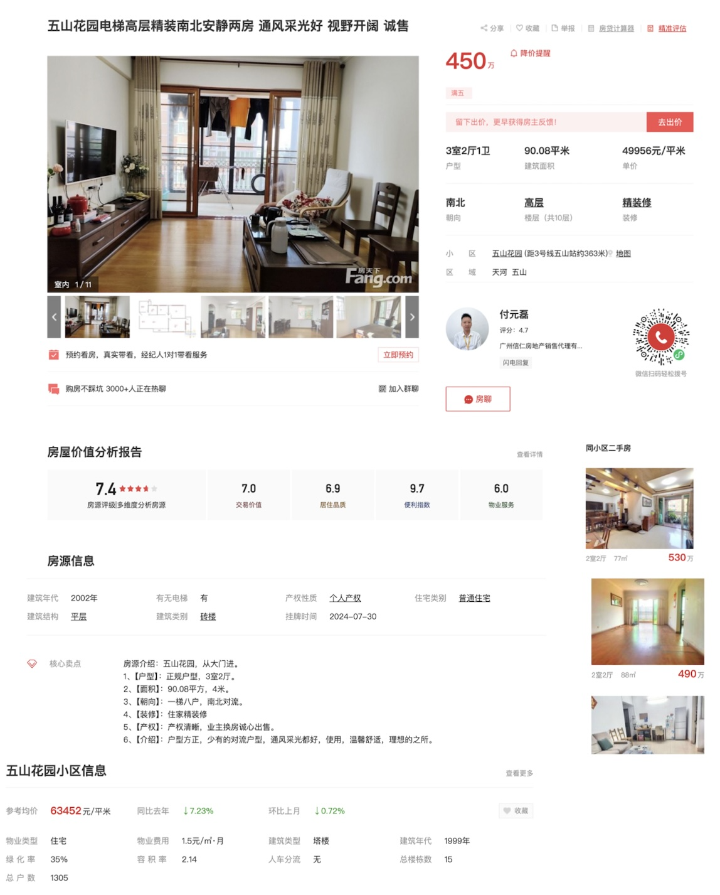
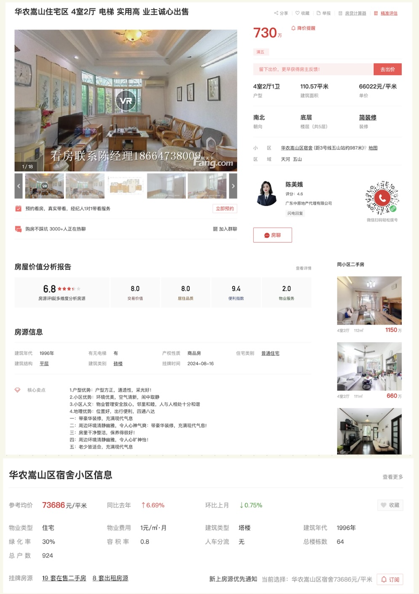
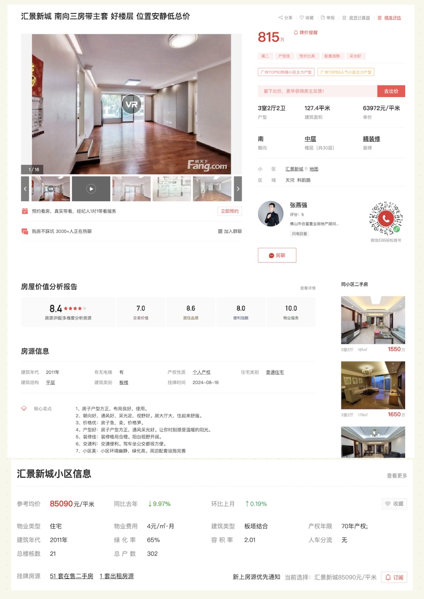

第1章
第1章 导论

课堂练习
题目1
1.1 浏览下述二手房信息，可以提取二手房的哪些变量？
点击浏览图片
- 房源1：五山花园

房源2：华农嵩山 
房源3：汇景新城 
1.2 从该网页中提取的变量是分类数据(有序分类还是无序分类), 还是数值数据(离散数据还是连续数据)？
1.3 根据上述二手房房源信息，你感兴趣的问题是什么？
题目2
2.1 开展关于毕业生薪酬的研究，你感兴趣那些问题？列出研究问题。
2.2 针对你想研究的的问题，你想收集那些数据？列出变量名称，这些数据是分类数据(有序分类还是无序分类), 还是数值数据(离散数据还是连续数据)？
软件工具

SPSS教学视频
SPSS习题
习题1
数据文件telco.sav
telco.sav文件在SPSS安装目录下, 在电脑搜索文件名找到该文件。
Windows系统下该文件的路径：C:/ProgramFiles/IBM/SPSS/Statistics/27/Samples/English
Mac系统下该文件的路径：/Applications/IBM SPSS Statistics 27/Samples/English/
sample files简介：https://www.ibm.com/docs/en/spss-statistics/27.0.0?topic=system-sample-files
1.1 在SPSS中打开telco.sav文件，查看数据有多少行？有多少个变量？
1.2 telco.sav文件中的变量ed的含义是什么？ed有哪几种取值？每种取值各有多少个个案？
1.3 telco.sav文件中的变量tenure的含义是什么？报告tenure的均值、中位数、标准差。
1.4 telco.sav文件中的变量address的含义是什么？报告address的均值、中位数、标准差。
1.5 报告age, income, employ, resid的均值、中位数、标准差、最小值和最大值。
习题2
数据文件毕业生.xlsx
2.1 将毕业生.xlsx导入到SPSS中，查看数据有多少行？有多少个变量？
2.2 报告月薪的均值、中位数、标准差、最小值和最大值。
2.3 统计各个专业的毕业生的人数。哪个专业的人数最多？占比最少？
2.4 统计各个专业的毕业生的月薪的均值、中位数、标准差、最小值和最大值。
2.5 将毕业生按就业地点分为广州和非广州两个组别，报告这两个组别的毕业生的月薪的均值、中位数、标准差、最小值和最大值。
2.6 将毕业生按性别分组，报个各组别的毕业生的月薪的均值、中位数、标准差、最小值和最大值。
2.7 将毕业生按单位类型分组，报个各组别的毕业生的月薪的均值、中位数、标准差、最小值和最大值。
拓展资源
 狗熊会(微信公众号) https://www.xiong99.com.cn/
狗熊会(微信公众号) https://www.xiong99.com.cn/
UCLA Data Analysis Examples https://stats.oarc.ucla.edu/other/dae/
Learn Excel with Examples https://www.excel-easy.com/examples.html
The Data And Story Library https://dasl.datadescription.com/
Kaggle https://www.kaggle.com/